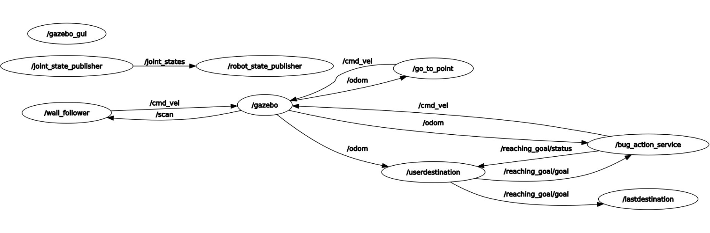

Wall Following with Gazebo and ROS’s documentation!
Contents:
Description
This project demonstrates a robot navigating in a Gazebo environment using the Bug-0 algorithm and a wall-following behavior, leveraging ROS Noetic and Gazebo for simulation. The robot can be controlled with an Action Server for non-blocking communication, allowing goal cancellation at any time. The system also includes a service to retrieve the most recently set goal destination.

Features
Action Server Navigation: Navigate the robot to target coordinates (x, y) using Bug-0 and wall-following algorithms.
Goal Cancellation: Cancel the current goal at any time through the action server.
Service to Retrieve Last Goal: Access the most recent goal coordinates via the /lastdestination service.
ROS Noetic Compatibility: Built and tested with ROS Noetic and Gazebo.
System Architecture
The system includes the following nodes and topics:
Nodes: - /robot_state_publisher: Publishes robot joint states. - /go_to_point and /wall_follower: Implements the Bug-0 and wall-following algorithms. - /bug_action_service: Manages goal-setting and cancellations via an Action Server. - /userdestination: Provides the last goal set by the user.
Topics: - /cmd_vel: Sends command velocity for robot motion. - /odom: Provides odometry data. - /reaching_goal/goal: Sets a new navigation goal for the robot. - /reaching_goal/status: Indicates the status of the goal (reached, cancelled, etc.).
Prerequisites
Before running the project, ensure you have the following installed: - ROS Noetic - Gazebo - rqt_graph (for visualization) - Necessary ROS packages for action servers, odometry, and geometry messages.
How to Run
Follow these steps to run the robot simulation:
Step 1: Launch the Gazebo Simulation Run the following command to start the Gazebo environment with the robot model:
`roslaunch assignment1_part2 assignment1.launch`
Run the Gazebo environment with the robot model:
roslaunch assignment1_part2 assignment1.launch Wait for RViz and Gazebo to start up!
Step 2: Set a Goal Input the goal coordinates via the terminal:
`
Set the goal coordinates!
Enter x coordinate: <value>
Enter y coordinate: <value>
Valid coordinate range: x ? [-9, 9], y ? [-9, 9].
`
Step 3: Cancel a Goal While the robot is moving, press q and hit Enter to cancel the current goal.
Step 4: Query the Last Goal
To retrieve the last goal, use the /lastdestination service:
`rosservice call /lastdestination`